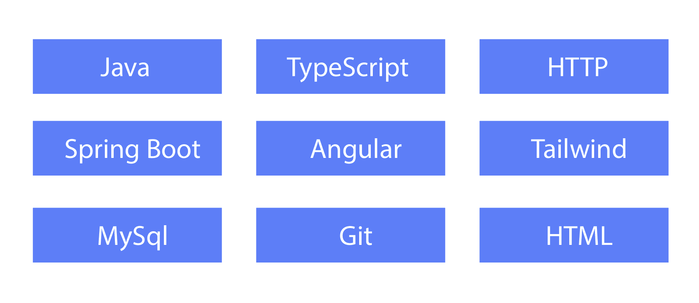

This web-app create by Rawezh with love as Task for an application of a
software engineer position.
Technologies has been used:

If you have some suggestion to improve the code quality or to write the code
sipmpler, please create a pull request :)